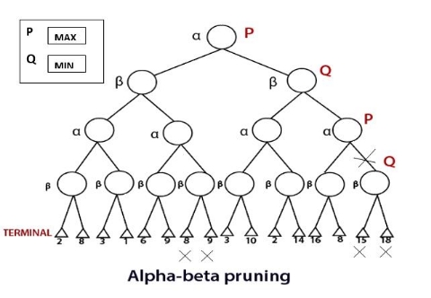
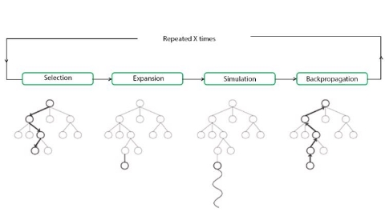

Unit III: Adversarial Search and Games
Game Theory
For MCQs:
States where the game has ended are called terminal states.
"zero-sum” means that what is good for one player is just as bad for the other: there is no “win-win” outcome. A utility function is also called an objective function or payoff function.
Chess is considered a “zero-sum” game,
Game tree is also known as Search tree or space graph
Notes:
Definition
Game Theory tries to understand the strategic moves of the players and deicide the optimal move from the set of all possible moves. To achieve this it makes use of game tree. A game tree is a recursive search function that examines all possible moves and their results and then decide the optimal move.
Working:
Start at the current board position,
Check all the possible moves the player can make
From each possible move predict which move the opponent will play
Decide the optimal move based on opponents move and results.
The two players and usually named as MAX and MIN.
MAX moves first, and then the players take turns moving until the game is over
At the end of the game, points are awarded to the winning player and penalties are given to the loser
A game can be formally defined with the following elements:
Initial state, which specifies how the game is set up at the start.
TO-MOVE : The player whose turn it is to move in state
ACTIONS : The set of legal moves in state
RESULT : The transition model, which defines the state resulting from taking action
in state .
TERMINAL : States where the game has ended are called terminal states.
UTILITY FUNCTION : A utility function defines the final numeric value to player when the game ends in terminal state
MCQs to solve:
https://engineeringinterviewquestions.com/mcqs-on-game-theory-and-answers/ https://www.sanfoundry.com/artificial-intelligence-mcqs-game-theory-1/
Videos to watch :
Introduction to Game Playing in Artificial Intelligence | Learn Game Playing Algorithms with Example
Optimal Decisions in Games
MIN MAX ALGO
In artificial intelligence, minimax is adecision-making strategy undergame theory, which is used to minimize the losing chances in a game and to maximize the winning chances. This strategy is also known as ‘Minmax,’ ’MM,’ or ‘Saddle point.’
We can easily understand this strategy via game tree- where the nodes represent the states of the game and edges represent the moves made by the players in the game. Players will be two namely:
- MIN: Decrease the chances of MAX to win the game.
- MAX: Increases his chances of winning the game.
They both play the game alternatively, i.e., turn by turn and following the above strategy, i.e., if one wins, the other will definitely lose it.
In minimax strategy, the result of the game or the utility value is generated by aheuristic function by propagating from the initial node to the root node. It follows thebacktracking technique and backtracks to find the best choice. MAX will choose that path which will increase its utility value and MIN will choose the opposite path which could help it to minimize MAX’s utility value.
MINIMAX algorithm is a backtracking algorithm where it backtracks to pick the best move out of several choices. MINIMAX strategy follows the DFS (Depth- first search) concept. Here, we have two players MIN and MAX, and the game is played alternatively between them, i.e., when MAX made a move, then the next turn is of MIN. It means the move made by MAX is fixed and, he cannot change it. The same concept is followed in DFS strategy, i.e., we follow the same path and cannot change in the middle. That’s why in MINIMAX algorithm, instead of BFS, we follow DFS.
- Keep on generating the game tree/ search tree till a limit d.
- Compute the move using a heuristic function.
- Propagate the values from the leaf node till the current position following the minimax strategy.
- Make the best move from the choices.
For example, in the above figure, the two players MAX and MIN are
there. MAX starts the game by choosing one path and propagating all the nodes of that path. Now, MAX will backtrack to the initial node and choose the best path where his utility value will be the maximum. After this,
its MIN chance. MIN will also propagate through a path and again will backtrack, but MIN will choose the path which could minimize MAX winning chances or the utility value.
So, if the level is minimizing, the node will accept the minimum value from the successor nodes. If the level is maximizing, the node will accept the maximum value from the successor.
Note: The time complexity of MINIMAX algorithm is O(bd) where b is the branching factor and d is the depth of the search tree.

For example, in the above figure, the two players MAX and MIN are
there. MAX starts the game by choosing one path and propagating all the nodes of that path. Now, MAX will backtrack to the initial node and choose the best path where his utility value will be the maximum. After this,
its MIN chance. MIN will also propagate through a path and again will backtrack, but MIN will choose the path which could minimize MAX winning chances or the utility value.
So, if the level is minimizing, the node will accept the minimum value from the successor nodes. If the level is maximizing, the node will accept the maximum value from the successor.
Note: The time complexity of MINIMAX algorithm is O(bd) where b is the branching factor and d is the depth of the search tree.

Heuristic Alpha Beta Tree Search
Alpha-beta pruning is an advance version of MINIMAX algorithm. The drawback of minimax strategy is that it explores each node in the tree deeply to provide the best path among all the paths. This increases its time complexity. But as we know, the performance measure is the first consideration for any optimal algorithm. Therefore, alpha-beta pruning reduces this drawback of minimax strategy by less exploring the nodes of the search tree.
The method used in alpha-beta pruning is that it cutoff the search by exploring less number of nodes. It makes the same moves as a minimax algorithm does, but it prunes the unwanted branches using the pruning technique
Working of Alpha-beta Pruning
Consider the below example of a game tree where P and Q are two players. The game will be played alternatively, i.e., chance by chance. Let, P be the player who will try to win the game by maximizing its winning chances. Q is the player who will try to minimize **P’**s winning chances. Here, ? will represent the maximum value of the nodes, which will be the value for P as well. ? will represent the minimum value of the nodes, which will be the value of Q.

- Any one player will start the game. Following the DFS order, the player will choose one path and will reach to its depth, i.e., where he will find
the TERMINAL value.
- If the game is started by player P, he will choose the maximum value in order to increase its winning chances with maximum utility value.
- If the game is started by player Q, he will choose the minimum value in order to decrease the winning chances of A with the best possible minimum utility value.
- Both will play the game alternatively.
- The game will be started from the last level of the game tree, and the value will be chosen accordingly.
- Like in the below figure, the game is started by player Q. He will pick the leftmost value of the TERMINAL and fix it for beta (?). Now, the next TERMINAL value will be compared with the ?-value. If the value will be smaller than or equal to the ?-value, replace it with the current ?-value otherwise no need to replace the value.
- After completing one part, move the achieved ?-value to its upper node and fix it for the other threshold value, i.e., ?.
- Now, its P turn, he will pick the best maximum value. P will move to explore the next part only after comparing the values with the current ?-value. If the value is equal or greater than the current ?-value, then only it will be replaced otherwise we will prune the values.
- The steps will be repeated unless the result is not obtained.
- So, number of pruned nodes in the above example are four and MAX wins the
game with the maximum UTILITY value, i.e.,3
The rule which will be followed is: “Explore nodes if necessary otherwise prune the unnecessary nodes.”
Note: It is obvious that the result will have the same UTILITY value that we may get from the MINIMAX strategy.
Monte Carlo Tree Search
It is a probabilistic and heuristic driven search algorithm
The basic MCTS strategy does not use a heuristic evaluation function. Instead, the value of a state is estimated as the average utility over a number of simulations of complete games starting from the state. A simulation (also called a playout or rollout) chooses moves first
for one player, than for the other, repeating until a terminal position is reached. At that point the rules of the game (not fallible heuristics) determine who has won or lost, and by what score. For games in which the only outcomes are a win or a loss, “average utility” is the same as “win percentage.”
pure Monte Carlo search, is to do N simulations starting from the current state of the game, and track which of the possible moves from the current position has the highest win percentage.
It balances two factors:
exploration of states that have had few playouts, and exploitation of states that have done well in past playouts, to get a more accurate estimate of their value.
Monte Carlo tree search does that by
maintaining a search tree and growing it on each iteration of the following four steps:
SELECTION: Starting at the root of the search tree, we choose a move (guided by the selection policy), leading to a successor node, and repeat that process, moving down the tree to a leaf.
EXPANSION: We grow the search tree by generating a new child of the selected node; SIMULATION: We perform a playout from the newly generated child node, choosing moves for both players according to the playout policy. These moves are not recorded in the search tree.
BACK-PROPAGATION: We now use the result of the simulation to update all the
search tree nodes going up to the root.

Advantages of Monte Carlo Tree Search:
- MCTS is a simple algorithm to implement.
- Monte Carlo Tree Search is a heuristic algorithm. MCTS can operate effectively without any knowledge in the particular domain, apart from the rules and end conditions, and can can find its own moves and learn from them by playing random playouts.
- The MCTS can be saved in any intermediate state and that state can be used in future use cases whenever required.
- MCTS supports asymmetric expansion of the search tree based on the circumstances in which it is operating.
Disadvantages of Monte Carlo Tree Search:
- As the tree growth becomes rapid after a few iterations, it requires a huge amount of memory.
- There is a bit of a reliability issue with Monte Carlo Tree Search. In certain scenarios, there might be a single branch or path, that might lead to loss against the opposition when implemented for those turn-based games. This is mainly due to the vast amount of combinations and each of the nodes might not be visited enough number of times to understand its result or outcome in the long run.
- MCTS algorithm needs a huge number of iterations to be able to effectively decide the most efficient path. So, there is a bit of a speed issue there.
Stochastic Games
Stochastic games are simulations of dynamic interactions in which the environment changes in response to the activities of the participants. "In a stochastic game, the play progresses by steps from position to position, according to transition probabilities determined jointly by the two players," Shapley writes.
A group of participants participates in a stochastic game. At each stage of the game, the action takes place in a specific state (or position, in Shapley's terminology), and each player selects an action from a list of options. The stage payoff that each player receives is determined by the collection of actions that the players choose, as well as the current state, as well as a probability distribution for the subsequent state that the game will visit.
Stochastic games apply von Neumann's model of strategic-form games to dynamic settings in which the environment varies in response to the players' decisions. They also use the Markov decision problem model, which was created by numerous RAND Corporation researchers in 1949–1952, to competitive scenarios with multiple decision makers.
The complexity of stochastic games arises from the fact that the players' decisions have two, sometimes opposing, consequences. First, the players' actions, in combination with the present state, determine the immediate payment that each player receives. Second, the present state and the players' activities influence the next state selection, which influences future reward possibilities. Each player, in particular, must balance these factors when deciding on his actions, which might be a difficult decision. Although this dichotomy is also present in one-player sequential decision problems, the presence of additional players who maximize their own goals adds complexity to the analysis of the situation.
-
Two player Games: For modelling and analysis of discrete systems functioning in an uncertain (adversarial) environment, stochastic two-player games on directed graphs are commonly employed. As vertices, a system's and its environment's possible configurations are represented, and transitions correspond to the system's, its environment's, or "nature's" actions. An infinite path in the graph corresponds to a run of the system. As a result, a system and its environment can be viewed as two hostile players, with one player (the system) aiming to maximise the probability of "good" runs and the other player (the environment) aiming to maximise the chance of "bad" runs. Although there may be an equilibrium value for this probability in many circumstances, there may not be optimal solutions for both parties. We go over some of the fundamental notions and algorithmic concerns that have been studied in this field, as well as some long-standing outstanding difficulties. Then we'll go through a few recent findings.
-
Application: Economic theory, evolutionary biology, and computer networks all use stochastic games. They are generalisations of repeated games that correspond to the unique case of a single state.
-
Key takeaway: Stochastic games are simulations of dynamic interactions in which the environment changes in response to the activities of the participants. "In a stochastic game, the play progresses by steps from position to position, according to transition probabilities determined jointly by the two players," Shapley writes.
Partially Observable Games
In deterministic partially observable games, uncertainty about the state of the board arises entirely from lack of access to the choices made by the opponent.
For a partially observable
game, the notion of a strategy is altered; instead of specifying a move to make for each possible move the opponent might make, we need a move for every possible percept sequence that might be received.
Card games such as bridge, whist, hearts, and poker feature stochastic partial observability, where the missing information is generated by the random dealing of cards.
treat the start of the game as a chance node with every possible deal as an
outcome, and then use the EXPECTIMINIMAX formula to pick the best move.
Limitations in game search algorithm
Alpha–beta search uses the heuristic
evaluation function as an approximation
Monte Carlo search computes an approximate
average over a random selection of playouts.
when the branching factor is high or it is difficult to
define an evaluation function, Monte Carlo search is preferred
One limitation of alpha–beta search is its vulnerability to errors in the heuristic function.
A second limitation of both alpha–beta and Monte Carlo is that they are designed to calculate (bounds on) the values of legal moves. But sometimes there is one move that is obviously best (for example when there is only one legal move), and in that case, there is no point wasting computation time to figure out the value of the move
A third limitation is that both alpha-beta and Monte Carlo do all their reasoning at the level of individual moves.
Constraint satisfaction problems
Constraint satisfaction is a technique where a problem is solved when its values satisfy certain constraints or rules of the problem.
The main idea is to eliminate large portions of the search space all at once by identifying variable/value combinations that violate the constraints.
A constraint satisfaction problem consists of three components, and : X is a set of variables, {X1,….Xn}
D is a set of domains, , {D1,.......Dn}, one for each variable.
C is a set of constraints that specify allowable combinations of values.
Where,
X is a set of variables.
D consists of a set of allowable values for each variable
For example, a Boolean variable would have the domain {true, false} .
C is constraint
Each constraint consists of a pair ,(scope, rel) where scope is a tuple of variables that participate in the constraint and rel is a relation that defines the values that those variables can take on.
An assignment of values to a variable can be done in three ways:
Consistent or Legal Assignment:
An assignment which does not violate any constraint or rule is called Consistent or legal assignment.
Complete Assignment:
An assignment where every variable is assigned with a value, and the solution to the CSP remains consistent. Such assignment is known as Complete assignment.
Partial Assignment:
An assignment which assigns values to some of the variables only. Such type of assignments are called Partial assignments.
Partial Solution is a partial assignment that is consistent.
Why formulate a problem as a CSP?
- CSPs yield a natural representation for a wide variety of problems; it is often easy to formulate a problem as a CSP.
- Years of development work have gone into making CSP solvers fast and efficient.
- a CSP solver can quickly prune large swathes of the search space that an atomic state-space searcher cannot
MCQs
MCQs
The 8-queens problem can also be viewed as a finite-domain CSP. Constraint Types in CSP
Unary Constraint :
restricts the value of a single variable. For example, in the map-coloring problem it could be the case that South Australians won’t tolerate the color green; we can express that with the unary Constraint.
Binary Constraint :
A binary constraint relates two variables. For example, is a binary constraint. A binary CSP is one with only unary and binary constraints; it can be represented as a constraint graph.
Global Constraints:
It is the constraint type which involves an arbitrary number of variables.
Inference in CSPs
Inference is nothing but reaching conclusion or achieving result on the basis of evidence and reasoning.
In local state-spaces, the choice is only one, i.e., to search for a solution. But in CSP, we have two choices either:
We can search for a solution or
We can perform a special type of inference called constraint propagation.
Constraint propagation is a special type of inference which helps in reducing the legal number of values for the variables. The idea behind constraint propagation is local consistency.
If we treat each variable as a node in a graph and each binary constraint as an edge, then the process of enforcing local consistency in each part of the graph causes inconsistent values to be eliminated throughout the graph. There are different types of local consistency Namely
Node Consistency:
A single variable (corresponding to a node in the CSP graph) is node-consistent if all the values in the variable’s domain satisfy the variable’s unary constraints.
It is easy to eliminate all the unary constraints in a CSP by reducing the domain of variables with unary constraints at the start of the solving process.
Arc Consistency:
A variable in a CSP is arc-consistent if every value in its domain satisfies the variable’s binary constraints
The most popular algorithm for enforcing arc consistency is called AC-3 (see Figure 6.3 ). To make every variable arc-consistent, the AC-3 algorithm maintains a queue of arcs to consider.
Path Consistency:
When the evaluation of a set of two variable with respect to a third variable can be extended over another variable, satisfying all the binary constraints. It is similar to arc consistency.
k-consistency:
Stronger forms of propagation can be defined with the notion of -consistency. A CSP is - consistent if, for any set of variables and for any consistent assignment to those variables, a consistent value can always be assigned to any th variable
Backtracking search for CSPs
The minimum-remaining-values and degree heuristics are domain-independent
methods for deciding which variable to choose next in a backtracking search. The least constraining- value heuristic helps in deciding which value to try first for a given
variable. Backtracking occurs when no legal assignment can be found for a variable. Conflict-directed backjumping backtracks directly to the source of the problem.
Constraint learning records the conflicts as they are encountered during search in order
to avoid the same conflict later in the search.
The complexity of solving a CSP is strongly related to the structure of its constraint
graph. Tree-structured problems can be solved in linear time.
Cutset conditioning can reduce a general CSP to a tree-structured one and is quite efficient (requiring only linear
memory) if a small cutset can be found.